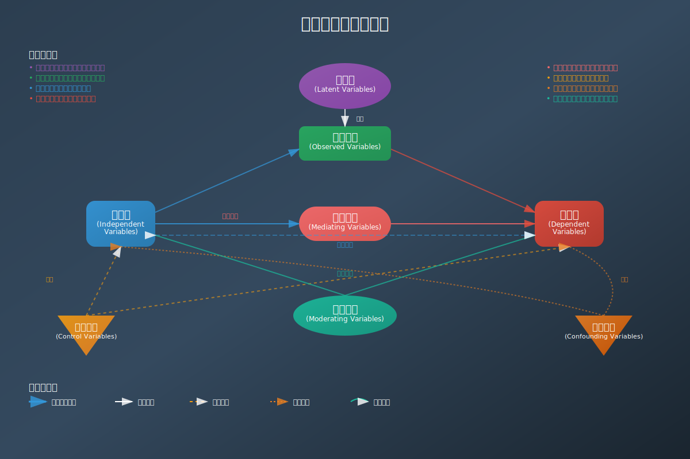

心理社会发展理论
"每个人的一生都要经历八个发展阶段，每个阶段都有其特定的发展任务和心理社会危机。"
理论核心
埃里克森的心理社会发展理论强调个体在整个生命周期中都在不断发展，每个阶段都面临特定的心理社会危机，成功解决这些危机将获得相应的品质和能力。
与人本主义的契合点
发展潜能
强调个体在每个阶段都有成长和发展的潜能，与人本主义的自我实现理念相呼应。
整体性视角
关注个体的整体发展，不仅仅是心理层面，还包括社会关系和环境因素。
积极品质
每个发展阶段成功解决危机后都会获得积极的心理品质，体现了人性的积极面。
心理社会发展八阶段
1
信任 vs 不信任
0-18个月
建立对世界和他人的基本信任感
希望
2
自主 vs 羞耻
18个月-3岁
发展自主性和独立性
意志
3
主动 vs 内疚
3-5岁
学会主动探索和承担责任
目标
4
勤奋 vs 自卑
5-12岁
发展学习和工作的能力
能力
5
同一性 vs 角色混乱
12-18岁
建立稳定的自我认同
忠诚
6
亲密 vs 孤独
18-40岁
建立亲密的人际关系
爱
7
繁衍 vs 停滞
40-65岁
关心下一代和社会贡献
关怀
8
完整 vs 绝望
65岁以上
回顾人生，获得智慧
智慧
理论应用
身份探索
帮助青少年探索和建立稳定的自我认同，解决角色混乱问题。
关系建立
指导年轻成人建立健康的亲密关系，避免孤独感。
生产性发展
鼓励中年人关注社会贡献和下一代的培养。
人格整合
帮助老年人回顾人生，实现人格的完整性。
不同变量之间的关系

上图展示了心理学研究中不同变量类型之间的复杂关系。理解这些变量关系对于设计严谨的心理学实验和解释研究结果至关重要。
理论整合
发展连续性
埃里克森理论强调人的一生都在发展，每个阶段都有其价值和意义，这与人本主义强调人的成长潜能相一致。
积极取向
理论关注个体如何成功应对发展挑战，获得积极品质，体现了对人性积极面的信念。
环境互动
强调个体与社会环境的互动，认为发展是个体与环境共同作用的结果。